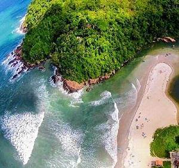
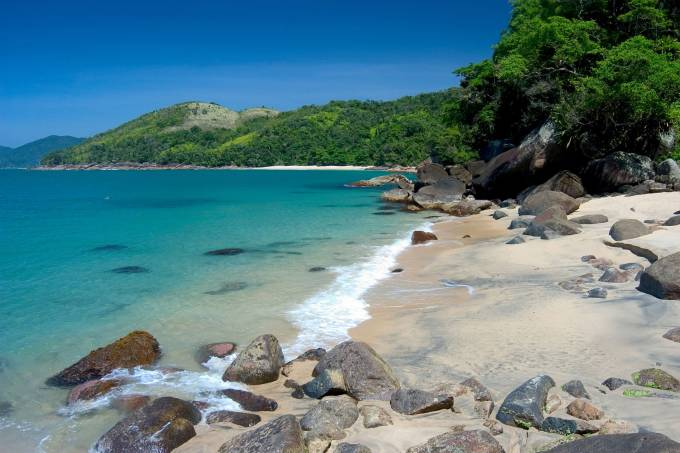

Ola, seja bem vinde!
Esse site tem como objetivo, transmitir algumas informações importantes sobre mim. Espero
que esteja preparado para uma grande historia.
Tenho 22 anos. Natual da cidade de São Paulo e criada em Mogi das Cruzes. Sou estudante de
Biotecnologia na UFABC.
Recentemente descobri o meu grande apreço por conhecer lugares e culturas diferentes.
Lugares visitados até o momento
Esse é um video no qual gravei na minha ultima viagem para arraial do cabo - RJ
Arraial do Cabo é um município brasileiro situado na Região dos Lagos do estado do Rio de Janeiro. Trata-se
de uma cidade costeira, possuindo uma altitude média de apenas oito metros. Fundada em 1503 pelo
conquistador Américo Vespúcio, foi elevada à categoria de município apenas em 1985, após sua emancipação do
município vizinho de Cabo Frio. A localização mais conveniente para se hospedar em Arraial do Cabo é no
canto esquerdo da Praia dos Anjos, próximo à Praça do Cova. Embora não seja um trecho de praia bom para
banho, é dali que saem os passeios de barco e os barco-táxis, e onde começa a trilha que leva à Praia do
Forno.
Praia de Itamambuca, encontro do mar com a mata Atlântica em Ubatuba!
Seu mar com ondas, costões rochosos arborizados e uma forte presença da natureza fazem com que Itamambuca
tenha um aspecto selvagem, de rara beleza!
A Praia de Itamambuca em Ubatuba está localizada na região norte, logo depois da Praia do Félix para quem
vai sentido Paraty, e é muito famosa por suas ótimas ondas para o surf.

A Praia do Cedro é um paraíso em meio ao agito da região central de Ubatuba.
Com mar cor de esmeralda, águas calmas e muito transparentes, a Praia do Cedro é perfeita para quem gosta de
curtir dentro da água e praticar snorkeling. O visual em terra não fica atrás! Cercada por intenso verde e
mata fechada, a pequena faixa de areia da Praia do Cedro é cenário perfeito para um dia de descanso sob a
sombra das árvores.
O acesso à Praia do Cedro não é tão simples e por isso ela não fica lotada. Para chegar, é preciso percorrer
um trecho de estrada de terra de má qualidade a partir do final da Praia Vermelha do Centro. Um
estacionamento improvisado no local dá conta dos carros que chegam mais cedo. A partir do estacionamento,
será necessário percorrer uma trilha leve de apenas 10 minutos.

O Parque Henrique Lage (ou simplesmente Parque Lage) é um parque público da cidade do Rio de
Janeiro, localizado aos pés do morro do Corcovado, na rua Jardim Botânico. Possui uma área com mais de 52
hectares e foi tombado pelo Instituto do Patrimônio Histórico e Artístico Nacional (IPHAN), em 14 de junho
de 1957, como patrimônio histórico e cultural da cidade do Rio de Janeiro. O palacete abriga, desde 1966,
o Instituto de Belas Artes que deu origem em 1974 à Escola de Artes Visuais. Desde 2004, o Parque Lage é
parte do Parque Nacional da Tijuca, sob a administração do Instituto Chico Mendes de Conservação da
Biodiversidade, estando o palácio sob tutela da dita escola.